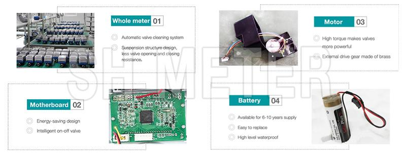

E-mail:
info@sh-meters.comCall Us:
+86 13131984716
The wireless remote Lora water meter can easily solve the problems of meter reading and labor cost in water through the concentrator and mobile electronic equipment, which not only can view the water usage in real time, but also greatly save the labor cost.
LORA wireless water meter is a new LORA remote meter reading solution, which can easily solve customer meter reading and labor cost problems.
Features:
1. Powered by battery to achieve water and electricity isolation. It has no exposed electrodes and has good moisture resistance. After reading the meter twice a week.
2. The magnetic field can automatically alarm when it is subject to external interference.
3. The remote water meter adopts advanced wireless transmission technology to realize remote collection of remote water meters, concentrators and computers. The structure is simple and convenient, and effectively solves the problem of difficulty in meter reading.
4.power failure automatic alarm to the remote management department, the motherboard is equipped with a Farad capacitor.
5.to avoid the trouble of manual meter reading, the administrator can directly see the real-time user water data on the water meter management system for effective control.
6. The starting flow is small and the precision is high.
Third, technical parameters description:
1. Technical indicators:
Operating temperature: 0°C-40°C (cold water) 0°C-90°C (hot water) Operating humidity: ≤95% Operating voltage: 3.6V
Static working current: ≤3μA
Protection level: IP68
Working pressure: ≤1.6Mpa
Micro transmit power: ≤50mW
Our LoRa Smart Remote Water Meter System consists of three levels. The first layer is a smart remote water meter with wireless transmission function and data relay function, the second layer is the concentrator, and the third layer is the property management computer. Solve customer problems through intelligent systems

 Cold Type Dry Dial Horizontal Multi Jet Water Meter
Cold Type Dry Dial Horizontal Multi Jet Water Meter Vertical Installation of Woltman Industrial Water Meter
Vertical Installation of Woltman Industrial Water Meter Smart GPRS Remote Reading Water Meter
Smart GPRS Remote Reading Water Meter Water Meter Flange End
Water Meter Flange End Bulk Woltman Water Meter
Bulk Woltman Water Meter